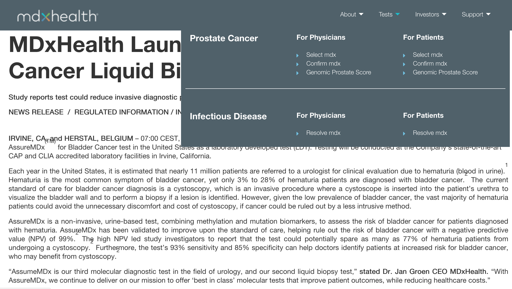
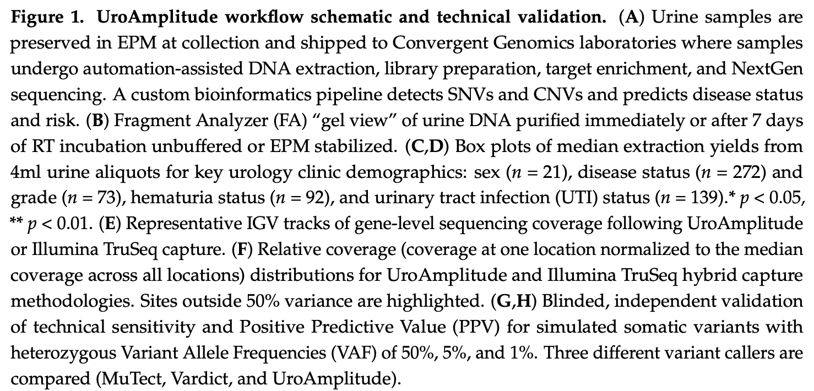
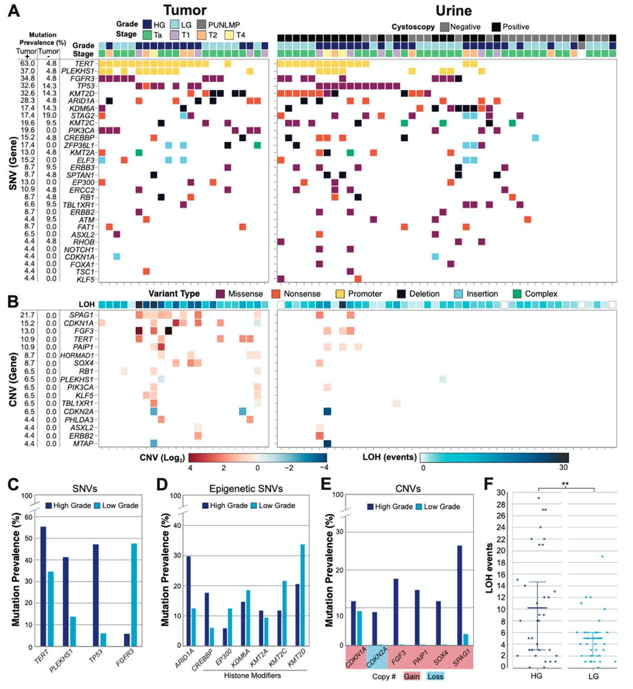
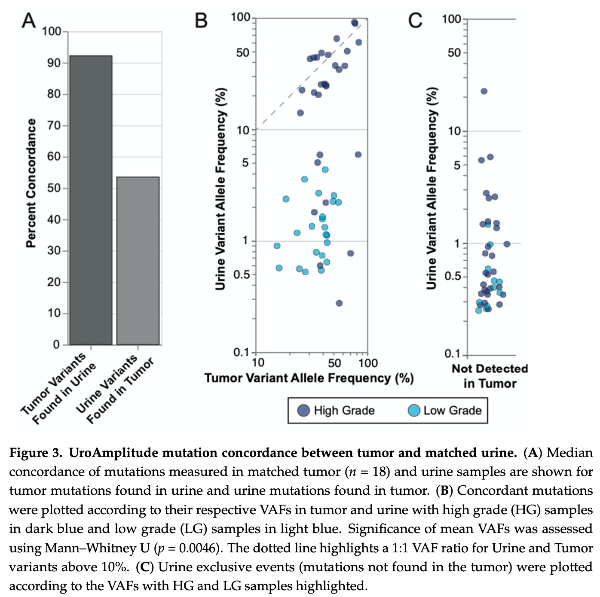
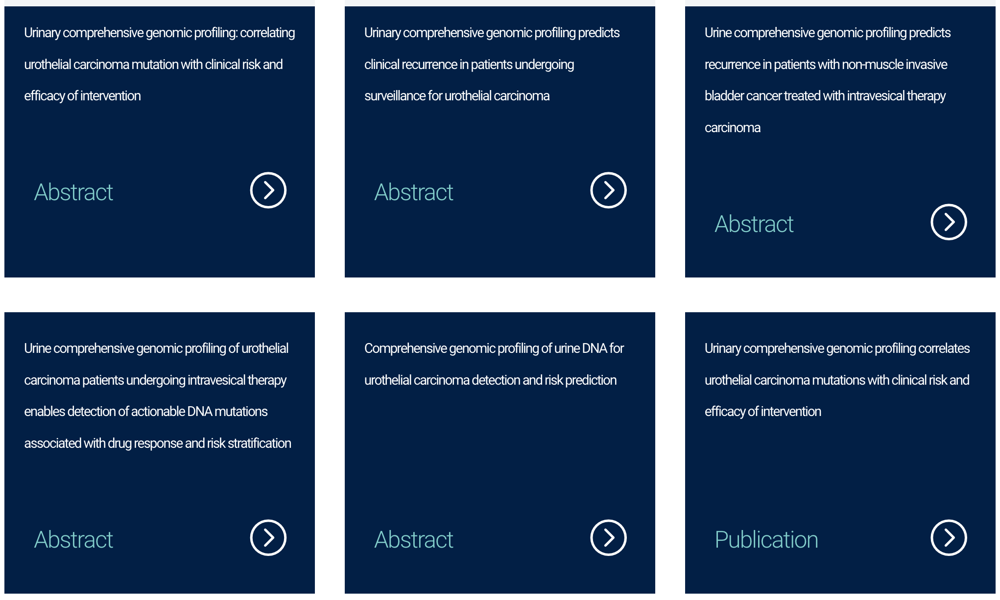

1. 甲基化肿瘤检测产品综述
1.1 截至2018年的国外商业化甲基化肿瘤检测
Koch, A. et al. Analysis of DNA methylation in cancer: location revisited. Nat Rev Clin Oncol 15, 459–466 (2018).

The Cancer Genome Atlas (TCGA) data for all biomarkers with commercially available assays were analysed for differential methylation between tumour and nonmalignant samples and to determine whether or not methylation status at the location of the area covered by the assay is correlated with expression. We also investigated whether or not the biomarkers are located in the promoter region of their corresponding genes and whether or not they are located in a CpG island. Data on the clinical performance of these biomarkers, as reported in the literature, are listed in Supplementary Table 2. CRC, colorectal cancer; NA, not available. ^a^Two different SEPT9 biomarkers are available, which both target the same genomic region but at slightly different locations. In some publications, the SEPT9 biomarker is variably referred to as the ColoVantage test by Quest Diagnostics, as a test provided by ARUP Laboratories, or as the Epi proColon test provided by Epigenomics. Both biomarkers have been patented by Epigenomics^83,85^, which has licensed one of them to Quest Diagnostics and ARUP Laboratories. ^b^A positive, instead of a negative, correlation exists between DNA methylation and gene expression of SHOX2, OTX1, and ONECUT2. ^c^MGMT is a predictive marker, rendering the comparison between tumour and nonmalignant samples less relevant. Furthermore, no nonmalignant samples of brain tissue are available in TCGA for comparisons with glioblastoma specimens.
1.2 国内甲基化产品：
产品列表
| 编号 | 注册证编号 | 注册人名称 | 产品名称 |
|---|---|---|---|
| 1 | 国械注准20223401301 | 安徽达健医学科技有限公司 | 人Twist1基因甲基化检测试剂盒（荧光PCR法） |
| 2 | 国械注准20223401371 | 北京艾克伦医疗科技有限公司 | Septin9/SDC2/BCAT1基因甲基化检测试剂盒（PCR-荧光探针法） |
| 3 | 国械注准20223400203 | 北京艾克伦医疗科技有限公司 | SHOX2/RASSF1A/PTGER4基因甲基化检测试剂盒（PCR-荧光探针法） |
| 4 | 国械注准20233400253 | 北京起源聚禾生物科技有限公司 | 人PAX1和JAM3基因甲基化检测试剂盒(PCR-荧光探针法) |
| 5 | 国械注准20203400447 | 博尔诚（北京）科技有限公司 | RNF180/Septin9基因甲基化检测试剂盒（PCR荧光探针法） |
| 6 | 国械注准20153401481 | 博尔诚（北京）科技有限公司 | Septin9基因甲基化检测试剂盒（PCR荧光探针法） |
| 7 | 国械注准20183400506 | 广州康立明生物科技股份有限公司 | 人类SDC2基因甲基化检测试剂盒（荧光PCR法） |
| 8 | 国械注准20203400845 | 杭州诺辉健康科技有限公司 | KRAS基因突变及BMP3/NDRG4基因甲基化和便隐血联合检测试剂盒（PCR荧光探针法-胶体金法) |
| 9 | 浙械注准20202210848 | 杭州诺辉健康科技有限公司 | KRAS基因突变及BMP3/NDRG4基因甲基化和便隐血联合检测分析软件 |
| 10 | 湘械注准20222211952 | 湖南奕谱生物科技有限公司 | PCDHGB7基因甲基化检测分析软件 |
| 11 | 国械注准20193400101 | 基因科技（上海）股份有限公司 | 人类MGMT基因甲基化检测试剂盒(荧光PCR法) |
| 12 | 国械注准20183400103 | 江苏为真生物医药技术股份有限公司 | 人septin9基因甲基化检测试剂盒（荧光PCR法） |
| 13 | 国械注准20213400007 | 厦门艾德生物医药科技股份有限公司 | 人类SDC2基因甲基化检测试剂盒（荧光PCR法） |
| 14 | 国械注准20223401036 | 上海捷诺生物科技有限公司 | 人ASTN1、DLX1、ITGA4、RXFP3、SOX17、ZNF671基因甲基化检测试剂盒（荧光PCR法） |
| 15 | 国械注准20223400637 | 上海锐翌生物科技有限公司 | 人类SFRP2和SDC2基因甲基化联合检测试剂盒（荧光PCR法） |
| 16 | 湘械注准20212211844 | 上海锐翌生物科技有限公司湖南分公司 | 人类SFRP2和SDC2基因甲基化联合检测试剂盒（荧光PCR法）阳性判断值分析软件 |
| 17 | 国械注准20173403354 | 上海透景生命科技股份有限公司 | 人SHOX2、RASSF1A基因甲基化DNA检测试剂盒(PCR荧光法) |
| 18 | 国械注准20193400316 | 上海透景生命科技股份有限公司 | 人Septin9基因甲基化DNA检测试剂盒（PCR荧光法） |
| 19 | 国械注准20233400151 | 深圳市优圣康生物科技有限公司 | Septin9基因甲基化检测试剂盒（PCR荧光探针法） |
| 20 | 国械注准20223400373 | 武汉艾米森生命科技有限公司 | SDC2和TFPI2基因甲基化联合检测试剂盒（荧光PCR法） |
可以看到，有几个产品是跑到湖南和浙江注册了对应的分析软件的。
评审报告公开的
-
Septin9/SDC2/BCAT1基因甲基化检测试剂盒（PCR-荧光探针法）（CSZ2000117）
- 结直肠癌辅助诊断(减少肠镜使用)
- 北京艾克伦，2022.10.18
-
人Twist1基因甲基化检测试剂盒（荧光PCR法）（CSZ2000297）
- 初诊膀胱癌的辅助诊断(减少膀胱镜使用)
- 安徽达健，2022.09.28
-
人ASTN1、DLX1、ITGA4、RXFP3、SOX17、ZNF671基因甲基化检测试剂盒（荧光PCR法）（CSZ1900359）
- HPV初筛
- 上海捷诺，2022.08.03
-
人类SFRP2和SDC2基因甲基化联合检测试剂盒(荧光PCR法)（CSZ2100018）
- 结直肠癌辅助诊断(减少肠镜使用)
- 上海锐翌，2022.05.10
-
SDC2和TFPI2基因甲基化联合检测试剂盒（荧光PCR法）（CSZ2100044）
- 结直肠癌辅助诊断(减少肠镜使用)
- 武汉艾米森 ， 2022.03.11
-
SHOX2/RASSF1A/PTGER4基因甲基化检测试剂盒（PCR-荧光探针法）（CSZ1900370）
- 疑似肺癌患者的辅助诊断
- 北京艾克伦 ， 2022.01.29
-
KRAS基因突变及BMP3/NDRG4基因甲基化和便隐血联合检测试剂盒（PCR荧光探针法-胶体金法）（CSZ2000050）
- 结直肠癌高风险人群结直肠癌辅助诊断(减少肠镜使用)
- 杭州诺辉 ，2020.11.02
-
RNF180/Septin9基因甲基化检测试剂盒（PCR荧光探针法）（CSZ1900136）
- 胃癌辅助诊断(减少胃镜使用)
- 博尔诚，2020.04.24
-
人类SDC2基因甲基化检测试剂盒（荧光PCR法）（CSZ1800035）
- 结直肠癌辅助诊断(减少肠镜使用)
- 广州康立明 ，2018.11.13
其它信息
-
国家药监局器审中心关于发布人类SDC2基因甲基化检测试剂临床试验资料技术审评要点等4项技术审评要点的通告（2022年第10号）2022.03.14
-
结直肠癌筛查产品国内外现状及临床评价要求 2021.03.05
-
创新医疗器械特别审查: 系统性红斑狼疮（SLE）基因甲基化检测试剂盒（MS-HRM分析法） 2020.01.22 深圳赛尔生物
-
医疗器械优先审批:人类ONECUT2/VIM基因甲基化检测试剂盒（荧光PCR法） 2022.08.04 广州基准
-
创新医疗器械特别审批:KRAS基因突变及BMP3/NDRG4基因甲基化和便隐血联合检测试剂盒（PCR荧光探针法-胶体金法） 2018.04.27 杭州诺辉
-
创新医疗器械特别审批:胃癌甲基化基因检测试剂盒（PCR荧光探针法） 2017.04.12 博尔诚（北京）
-
创新医疗器械特别审批: 人类SDC2基因甲基化检测试剂盒（荧光PCR法） 2017.03.07 广州康立明
-
创新医疗器械特别审批: 大肠癌甲基化基因检测试剂盒（PCR荧光探针法）2014.09.26 博尔诚（北京）
2. MDxHealth的尿路上皮癌检测产品
通过qPCR方法，检测尿液里面，FGFR3、TERT、HRAS的突变，以及OTX1、ONECUT2、TWIST1的甲基化，用逻辑回归的方法进行分析。灵敏度93%，特异性86%。
原始文献
https://www.auajournals.org/doi/10.1016/j.juro.2016.09.118
van, K. K. E. M. et al. Validation of a DNA Methylation-Mutation Urine Assay to Select Patients with Hematuria for Cystoscopy. Journal of Urology 197, 590–595 (2017).
DNA was extracted and analyzed for mutations in FGFR3, TERT and HRAS, and methylation of OTX1, ONECUT2 and TWIST1. Logistic regression was used to analyze the association between predictor variables and bladder cancer.
Combining the methylation and mutation markers with age led to an AUC of 0.96 (95% CI 0.92–0.99) with 93% sensitivity and 86% specificity, and an optimism corrected AUC of 0.95.
MDxHealth网站介绍

AssureMDx is a non-invasive, urine-based test, combining methylation and mutation biomarkers, to assess the risk of bladder cancer for patients diagnosed with hematuria. AssureMDx has been validated to improve upon the standard of care, helping rule out the risk of bladder cancer with a negative predictive value (NPV) of 99%^2^. The high NPV led study investigators to report that the test could potentially spare as many as 77% of hematuria patients from undergoing a cystoscopy^2^. Furthermore, the test’s 93% sensitivity and 85% specificity can help doctors identify patients at increased risk for bladder cancer, who may benefit from cystoscopy.^2^
[2]: van, K. K. E. M. et al. Validation of a DNA Methylation-Mutation Urine Assay to Select Patients with Hematuria for Cystoscopy. Journal of Urology 197, 590–595 (2017).
但是，在该公司网站上，产品介绍里面没有AssureDx了，只有针对前列腺癌和尿路感染的产品：

3. 达健的Twist1甲基化产品
临床性能
针对尿路上皮癌，用qPCR检测尿液中Twist1基因甲基化状态，临床灵敏度88.2%，特异性86.8%，总符合率87.2%。
看起来临床性能指标比MDxHealth的AssureDx稍差，但是单基因能达到这样效果，个人觉得已经很不错了。只不过这样的特异性，使用的时候只能做早诊或者辅助诊断（阳性率稍高），做早筛或者健康人群（阳性率很低）的时候，特异性低会导致大部分的健康患者产生的假阳性的数目非常高，相对于检测所得的真阳性和假阴性数目会变得很大，最终会造成阳性预测值非常低。
另外，据说，该产品用于粪便也可检测结直肠癌。
NMPA审评报告
人Twist1基因甲基化检测试剂盒（荧光PCR法）（CSZ2000297）


4. Twist1这个基因
4.1 泛肿瘤
Zhu, Q.-Q., Ma, C., Wang, Q., Song, Y. & Lv, T. The role of TWIST1 in epithelial-mesenchymal transition and cancers. Tumor Biol. 37, 185–197 (2016).
It is well recognized that TWIST1 is overexpressed in a variety of tumors. Overexpression of TWIST1 induces epithelial-mesenchymal transition (EMT), a key process in the metastases formation of cancer. TWIST1 also promotes the formation of cancer stem cells and facilitates the process of tumorigenesis.
Twist1在多种肿瘤中高表达，其高表达与上皮-间质转化有关（所以有没有可能其他消化道相关的肿瘤也跟这个基因有关？可以查一下公开的数据），该基因也可促进肿瘤干细胞的生成并促进肿瘤形成(tumorigenesis)。
TWIST1的高表达，在包括乳腺癌、前列腺癌、肝癌、胃癌等多种肿瘤都有发现。
4.2 膀胱癌
El Azzouzi, M. et al. Evaluation of DNA methylation in promoter regions of hTERT, TWIST1, VIM and NID2 genes in Moroccan bladder cancer patients. Cancer Genetics 260–261, 41–45 (2022).
Hypermethylation of hTERT, TWIST1, VIM and NID2 was detected in 83.34%; 66.67%; 83.34% and 58.34% of recurrent cases, respectively, and in 80%; 80%; 80% and 60% of progressive cases, respectively. Statistical analysis highlighted a significant association between TWIST1 hypermethylation and tumour recurrence (p = 0.041<0.05).
Our results indicate that hypermethylation of hTERT, TWIST1, VIM and NID2 genes is a frequent epigenetic event in bladder cancer and could be a promising therapeutic target to prevent bladder cancer progression and metastasis.
4.3 结直肠癌
方法
-
CORD assay
提取粪便DNA，用微滴式数字PCR同时检测hTERT和甲基化的TWIST1的拷贝数。
Fecal samples were thawed from 220°C, and approximately 200 mg of each sample was used for DNA extraction using the QIAamp DNA Stool Mini kit (QIAGEN, Tokyo, Japan), as described previously (7). Eluted DNA (10 mL) was digested for 16 hours at 37°C by the addition of 10 units of HhaI, 10 units of HpaII, and 20 units of exonuclease I (Exo I) (all from Thermo Fisher Scientific, Tokyo, Japan). Additional digestion of DNA was performed for 16 hours at 60°C using 10 units of BstUI (New England Biolabs, Hitchin, United Kingdom). After the restriction was complete, the mixture was heated for 10 minutes at 98°C. We performed multiplex droplet digital polymerase chain reaction to simultaneously count the absolute copy numbers of human telomerase reverse transcriptase (hTERT) and the methylated target gene (TWIST1), as described previously (7). Laboratory testing was performed without the knowledge of the results of either the comparator FIT or clinical findings.
-
Fecal DNA testing of TWIST1 methylation

甲基化TWIST的拷贝数在20个及以上，且甲基化的比例在19%以上，作为分别结直肠癌与否的阈值。
The distributions of copy numbers of TWIST1 methylation and the methylation ratio of TWIST1 are shown in Figure 2a, c, respectively. We set 20 copies of methylated TWIST1 and a TWIST1 methylation ratio of 19% as the cutoff points to discriminate between the no neoplasia group and the colorectal cancer group. Each cutoff value was determined so that the specificity would be approximately 95% (Figure 2b, d), which is compatible with the specificity of FIT in screening setting populations (4,14). The TWIST1 methylation ratio was calculated according to the ratio of methylated TWIST1 copy numbers to hTERT copy numbers. The criterion for a positive result with the fecal DNA testing of TWIST1 is either the copy number of methylated TWIST1 is above the cutoff point (>=20 copies) or the TWIST1 methylation ratio is above the cutoff point (>=19%), or both are above the cutoff points.
Positive results of the fecal DNA testing of TWIST1 were found in 8.5% (6/71) of the individuals in the no neoplasia group (specificity of 91.5%; 95% CI, 82.5%–96.8%), in 27.5% (11/40; 95% CI, 14.6%–43.8%) of the nonadvanced adenoma group, in 47.2% (60/127; 95% CI, 38.4%–56.4%) of the advanced adenoma group, and in 44.4% (91/205; 95% CI, 37.4%–51.5%) of the co- lorectal cancer group (Table 2 and Figure 3a).
性能
把粪便隐血检测和粪便TWIST1甲基化检测结合起来，对结直肠癌有80.3%的特异性和95.6%的敏感度。

结论
What is known
- The main approach to colorectal cancer screening is the FIT for which the sensitivity for the detection of advanced colorectal adenoma is low, ranging from 23.8% to 27.1%. For morphological subtypes of advanced adenoma, its sensitivity is 30.1% for polypoid type but only 18.5% for nonpolypoid type.
- Colonoscopy is the gold standard for the detection of colonic polyps. However, the miss rate of colonoscopy is 20.9%–24% for adenomas of any size, and the overall miss rate for adenomas of the flat type is higher than that for the protruding type (44.3% vs 15.1%).
- Fecal DNA testing in combination with FIT has recently been introduced for colorectal neoplasia detection. However, its sensitivity for advanced adenoma remains at a low level of only 42.4%.
- We reported that TWIST1 methylation is specific to colorectal neoplasia and developed a new methylation assay without bisulfite treatment and methylated DNA immunoprecipitation, the CORD assay.
What is new here
- Fecal DNA testing of TWIST1 methylation by the CORD assay in combination with the FIT increased sensitivity to 68.5% for the detection of advanced adenoma.
- For morphological subtypes of advanced adenoma, the sensitivity of the combination test for polypoid type was 2.3 times higher than that of FIT alone (64.8% vs 28.2%), and that for nonpolypoid type was 4.4 times higher than that of FIT alone (71.0% vs 16.1%).
Translational impact
- Performing fecal DNA testing of TWIST1 methylation by the CORD assay in combination with the FIT before colonoscopy might predict the presence of colorectal neoplasia, which might lead to more intensive examination during colonoscopy.
4.4 乳腺癌
Gort, E. H. et al. Methylation of the TWIST1 Promoter, TWIST1 mRNA Levels, and Immunohistochemical Expression of TWIST1 in Breast Cancer. Cancer Epidemiology, Biomarkers & Prevention 17, 3325–3330 (2008).
4.5 胃癌
Sakamoto, A. et al. DNA Methylation in the Exon 1 Region and Complex Regulation of Twist1 Expression in Gastric Cancer Cells. PLOS ONE 10, e0145630 (2015).
5. 关于膀胱癌的另外一个检测产品-基于FISH的膀胱癌复发检测
Vysis®UroVysion MT Bladder Cancer Recurrence Kit
使用FISH检测尿液中染色体的染色体特定区域(chr3、chr7、chr17上的特定区域，9p21的缺失)的CNV，判断复发风险。
Description of the Device The UroVysion Kit is based upon fluorescence in situ hybridization (FISH) DNA probe technology. The UroVysion probes are fluorescently labeled nucleic acid probes for use in in situ hybridization assays on urine specimens fixed on slides. The UroVysion Kit consists of a 4-color, four-probe mixture of DNA probe sequences homologous to specific regions on chromosomes 3, 7, 9, and 17. The UroVysion probe mixture consists of Chromosome Enumeration Probe (CEP®) 3 SpectrumRed^TM^, CEP 7 SpectrumGreen^TM^ , CEP 17 SpectrumAqua^TM^, and Locus Specific Identifier (LSI®) 9p21 SpectrumGold^TM^.
Intended Use The UroVysion Bladder Cancer Recurrence Kit (UroVysion Kit) is designed to detect aneuploidy for chromosomes 3, 7, 17, and loss of the 9p21 locus via fluorescence in situ hybridization (FISH) in urine specimens from subjects with transitional cell carcinoma of the bladder. Results from the UroVysion Kit are intended for use as a noninvasive method for monitoring for tumor recurrence in conjunction with cystoscopy in patients previously diagnosed with bladder cancer.
看来，对于膀胱癌来讲，只看特定区域(chr3、chr7、chr17上的特定区域，9p21的缺失)的CNV，就可以做复发监测的。这又让人联想起苏州宏元的检测。
6. 苏州宏元的尿路上皮癌检测
这个检测，其实就是类似NIPT-plus的技术，用PCR-free方法建库，然后做全基因组低拷贝数测序，进行全基因组范围内CNV的分析。本质上是一个泛肿瘤的检测，因为很多肿瘤都会有染色体层面的拷贝数变化，而且具体哪些染色体哪些位置会有CNV变化，还有肿瘤特异性。他们针对尿路上皮癌去做IVD，估计是考虑了在该临床应用场景下更有优势。

7. 针对尿液cfDNA突变的尿路上皮癌检测
偶然看到这家公司的产品，检测尿液60个基因，预测尿路上皮癌，看起来效果比单用一个基因的甲基化效果稍好一点。
-
通过公开数据，选择区分度大的区域和突变，最终检测60个基因，245.103k区域，突变类型包括SNV、indel、LoH（loss of heterozygosity）、CNV。
-
采用配对的肿瘤和尿液来检验UroAmplitude的性能。
-
可用作长期监测。
新闻-最高可提前12年发现尿路上皮癌
Researchers studied UroAmp in two ways.
First, they conducted a case-control study with urine samples from 96 control subjects and 70 bladder cancer patients (22 de novo, 48 surveillance). This found UroAmp had an 86% sensitivity in predicting new tumors and 71% sensitivity overall (new and recurrent). Specificity, or the percentage of people who tested negative for bladder cancer and do not have the disease, was 94%.
A second study used a nested case-control design within the prospective Golestan Cohort Study, which contains urine samples from over 50,000 patients taken up to 12 years ago. Researchers analyzed the urine from 29 patients who developed bladder cancer and compared it to 98 control subjects who never developed the disease. UroAmp correctly predicted future cancer in 66% of cases with a 94% specificity. When limited to patients who were diagnosed within five years from initial urine collection, UroAmp sensitivity jumped to 90%.

Urinary comprehensive genomic profiling predicts urothelial cancer up to 12 years ahead of clinical diagnosis. An expanded analysis of the Golestan Cohort Study
INTRODUCTION:
Detecting pre-clinical urothelial carcinoma (UC) using urinary comprehensive genomic profiling (uCGP) may provide a valuable opportunity for early detection and screening of high-risk populations. The UroAmp (Convergent Genomics) uCGP test uses DNA sequencing to identify mutations across 60 genes. We study a subset of these genes, considering 10 genes with the highest performance, testing the potential of a screening modified uCGP (muCGP) to detect preclinical UC.
METHODS:
A UC screening model was developed using muCGP data from a training cohort consisting of 140 urology controls & 96 tumors (56 de novo, 40 recurrent). Model validation was performed in two studies: first a multi-institutional case-control design with 96 controls & 70 UC cases (22 de novo, 48 surveillance); a second using a nested case-control design within the prospective Golestan Cohort Study (50,045 participants). The nested cohort consisted of 29 asymptomatic individuals who subsequently developed primary UC (median time to UC 7.3 yrs) and 98 matched controls (median f/u 6.1 yrs).
RESULTS:
The UC screening model was trained to a sensitivity of 88% (97% sensitivity for HG) and specificity of 94%. In the first validation, a sensitivity of 86% in de novo (87% for HG), 71% overall (de novo + recurrent tumors), and specificity 94% was observed. In the Golestan cohort, baseline muCGP had a prediction sensitivity of 66% (71% for HG) and specificity 94% was observed (Figure 1A). In contrast baseline TERT predicted 48% percent of cancers with a specificity of 100%. Cancer-free survival was significantly worse in muGCP-predicted positives vs. muGCP-predicted negatives (HR 8.5, 95% CI 3.8 – 18.4, p<0.0001). When limited to UC diagnosis within five years, UroAmp detected pre-clinical UC in 90% of future cancers (Fig. 1B), compared to a sensitivity of 57% using TERT mutations alone. CONCLUSIONS: Our results provide the first evidence from a population-based prospective cohort study of pre-clinical UC detection with muCGP. muCGP identifies 9 of 10 cancers that occur within the first 5 years while detecting 10 of 19 cancers that occur beyond 5 years. Further studies will determine the frequency of muCGP screening required to maximize cancer detection and refine clinical interventions to save lives.
SOURCE OF FUNDING:
Convergent Genomics with a grant from the National Cancer Institute Small Business Innovation Research Program, 5R44CA200174-05
方法
Bicocca, V. T. et al. Urinary Comprehensive Genomic Profiling Correlates Urothelial Carcinoma Mutations with Clinical Risk and Efficacy of Intervention. Journal of Clinical Medicine 11, 5827 (2022).
- 肿瘤和尿液DNA都用Covaris进行打断，KAPA建库，IDT接头，IDT杂交捕获，2x150，NextSeq 550测序。
All NGS sequencing was performed according to the UroAmplitude procedure, a Clinical Laboratory Improvement Amendments (CLIA) validated diagnostic test. Puri- fied tumor and urine DNA was fragmented by sonication (Covaris ME220, Covaris LLC, Woburn, MA, USA) before undergoing library preparation using the KAPA Hyper Prep Kit (Roche, Basel, Switzerland) protocol and is optimized for automation by a Microlab STARLET (Hamilton). xGen Dual Index adapters are synthesized by IDT and a custom xGen Lockdown Probe panel (Integrated DNA Technology, Coralville, IA, USA) is used for hybridization capture of DNA libraries. The hybridization capture workflow has been optimized for performance on a Nimbus microLAB (Hamilton). Target-enriched libraries are analyzed using a 2100 Bioanalyzer (Agilent, Santa Clara, CA, USA) and diluted for sequencing. Libraries are loaded into a NextSeq 500/550 High Output Reagent Cartridge (v2, 300 cycles) and sequenced on a NextSeq 550 (Illumina, San Diego, CA, USA).
- BWA；SNV 用Mutect2/VarDict；CNV用t-test；LoH用基于SNP的方法。


分析性能评估
分析性能评估，灵敏度97.4%，阳性预测值 80.4%。
In this study, we performed a blinded, prospective validation of technical sensitivity and positive predictive value (PPV) using reference standards, and found at 1% allele frequency, mutation detection performs at 97.4% sensitivity and 80.4% PPV.



临床性能研究
-
Salari, K. et al. Comprehensive genomic profiling of urine DNA for urothelial carcinoma detection and risk prediction. DOI: 10.1200/JCO.2022.40.6_suppl.450 Journal of Clinical Oncology 40, no. 6_suppl (February 20, 2022) 450-450.
Method:
uCGP was performed on urine specimens collected at 9 centers across the US from 577 subjects prior to cystoscopy. 152 subjects were UC tumor positive (de novo and recurrence), 191 had a history of UC but negative by surveillance cystoscopy at time of collection, and 234 were urology control subjects undergoing cystoscopy without evidence of UC. Urine DNA was sequenced and comprehensively profiled across 60 genes for 6 classes of mutations using the CLIA-validated UroAmplitude test. Disease detection and molecular grade (high grade vs. low grade) algorithms were trained (n=345) and validated (n=232) in independent cohorts.
Results:
In validation, de novo tumor diagnosis demonstrated sensitivity of 93.8% and specificity of 89.4% and a NPV of 98.8% in urology controls. Recurrent tumors were detected with a PPV of 73.5%, sensitivity of 62.5% and specificity of 89.0% in patients with a history of UC. Molecular grading predicted high-grade with a PPV of 90.9% and a specificity of 96.7% compared to pathology.
-
公司网站，列出了一些临床证据

-
问题：假如把甲基化也加进来，会不会效果更好？